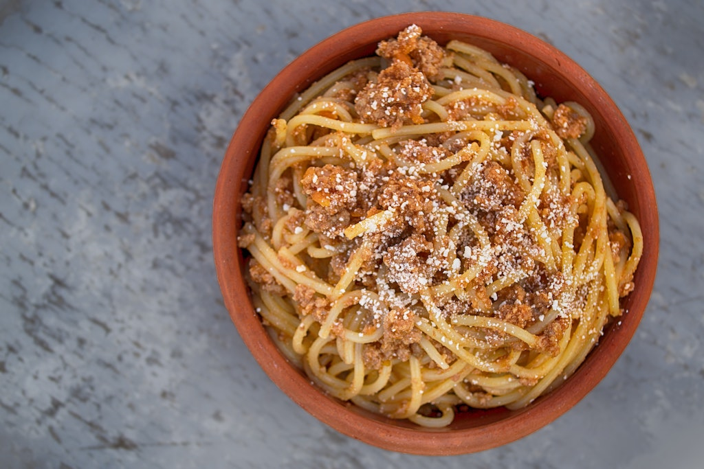

Spaghetti

Description
This spaghetti noodle pasta recipe goes back for
generations. It's warm, delightful, and will satisfy
your soul. Travel to Italy with a bowl, a fork, and a spoon.
Ingredients
- Thin spaghetti noodes
- Ground beef
- Pasta sauce
- Garlic power
- Onion powder
- Salt
- Black pepper
Steps
- Cook ground beef
- Add seasoning to ground beef
- Drain cook ground beef
- Heat pasta sauce
- Add ground beef to sauce
- Let simmer while noodles are being cooked.
- Follow box directions for cooking noodles
- Either add meat sauce to noodles or serve on top